Home
Axolotls are fascinating amphibians known for their unique ability to regenerate limbs and retain their larval features throughout their lives. They are native to lakes underlying Mexico City and are often referred to as "Mexican walking fish," although they are not fish but amphibians.
Axolotls have a distinctive appearance with feathery external gills, a wide head, and a smiling face. They come in various colors, including wild-type (dark with speckles), leucistic (pale pink with red eyes), albino, golden albino, and melanoid (completely dark).
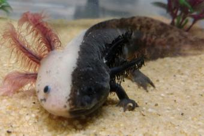
About These Amazing Creatures
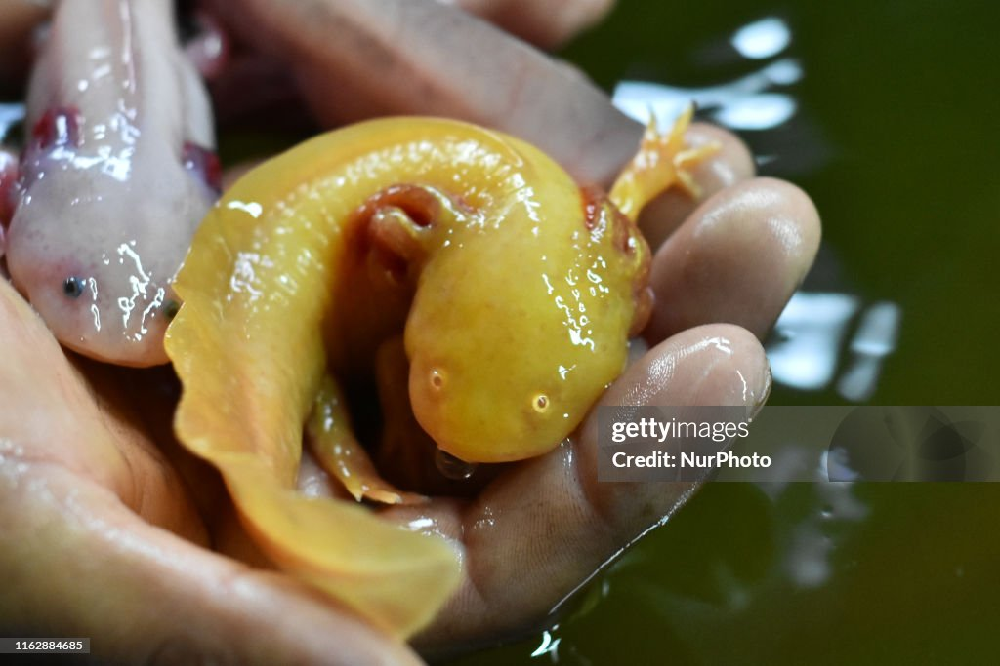
Axolotls are critically endangered in the wild due to habitat loss and pollution. However, they are popular in the pet trade and scientific research due to their regenerative capabilities. Axolotls can regenerate not only limbs but also spinal cord, heart, and other organs, making them a subject of interest for medical research.
In captivity, axolotls require specific care, including cool water temperatures, a proper diet of live or frozen foods, and a spacious tank with hiding spots. They are generally peaceful creatures but can be cannibalistic if housed together without enough space or food.
Gallery
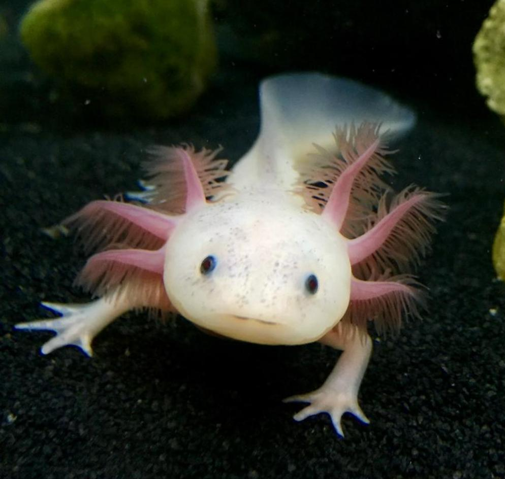
Leucistic Axolotl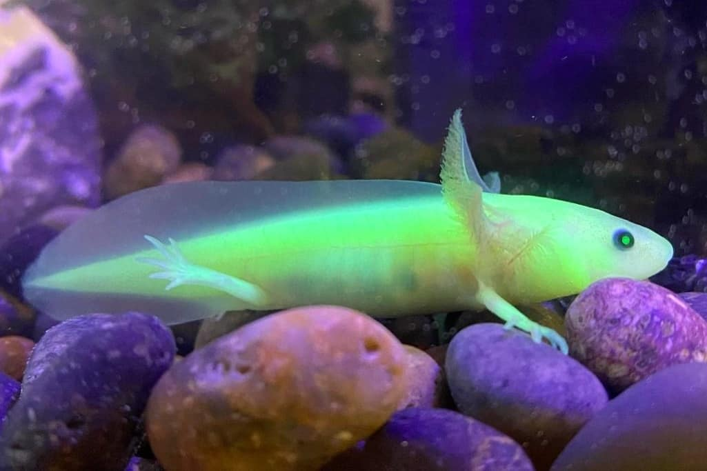
GFP Axolotl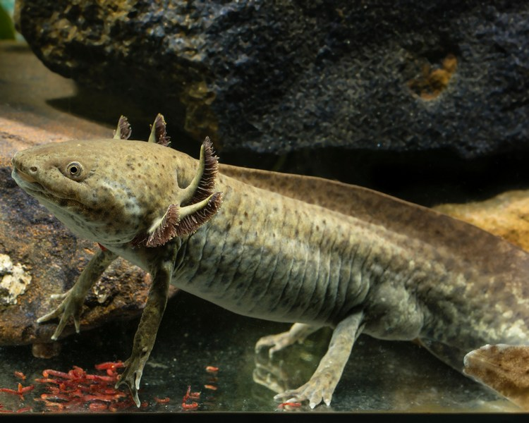
Wild Type Axolotl White Albino Axolotl
White Albino Axolotl
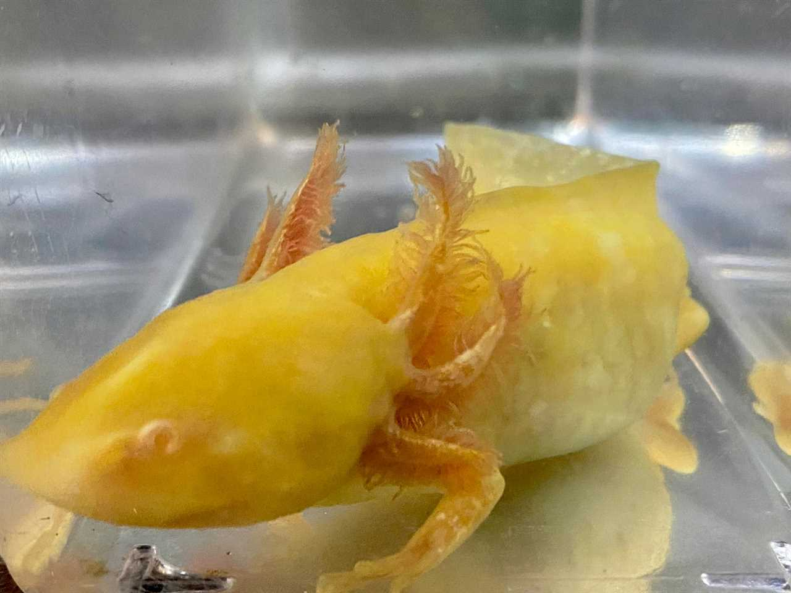
Golden Axolotl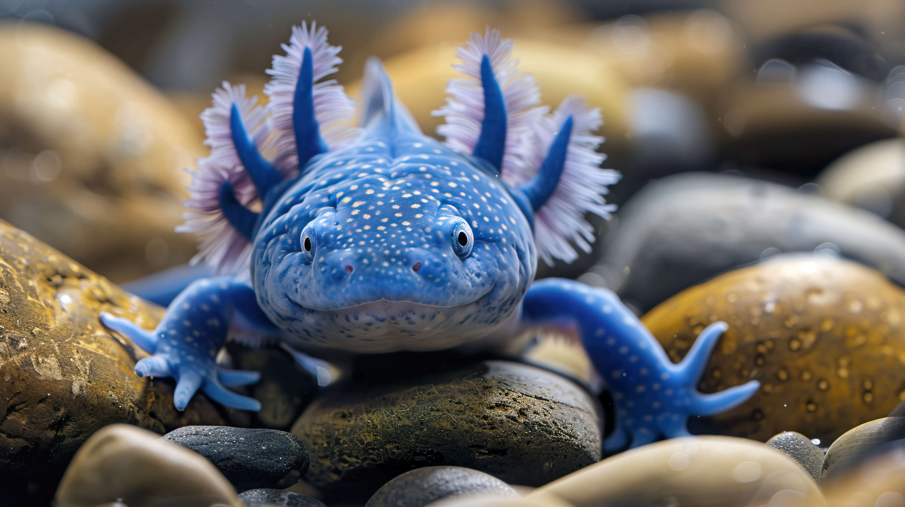
Blue Axolotl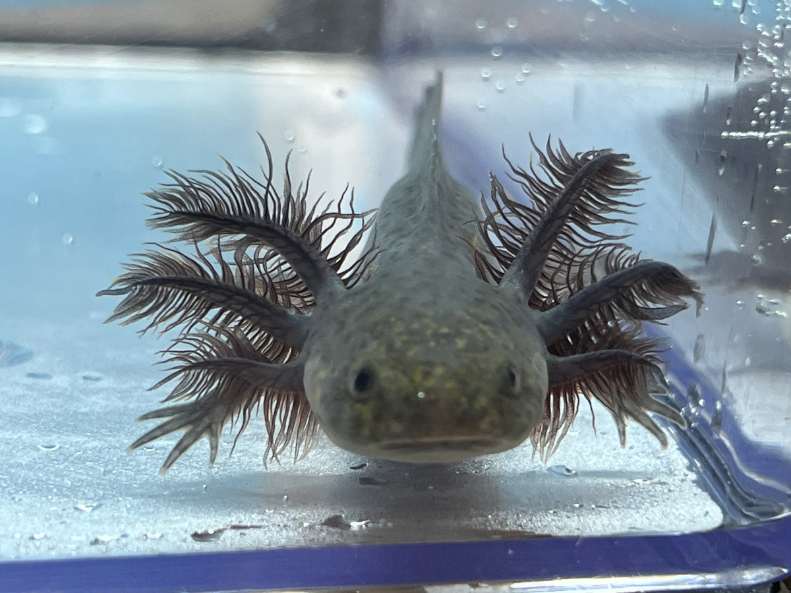
Melanoid Axolotl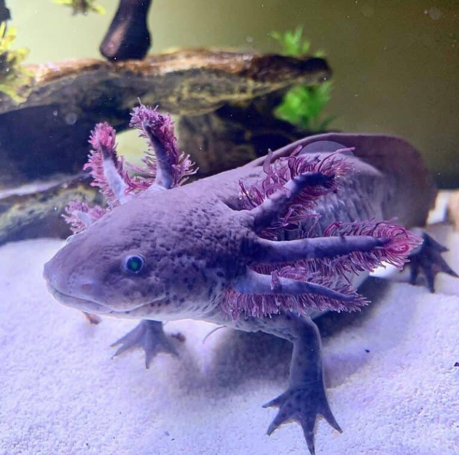
Purple AxolotlMost Popular Types of Axolotl
-
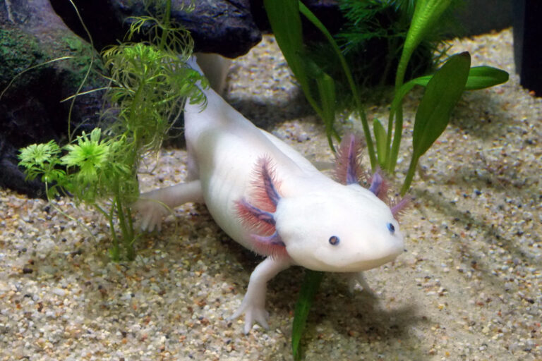
The Leucistic Axolotl
The most popular axolotl in captivity is the Leucistic. They are pink with dark eyes.
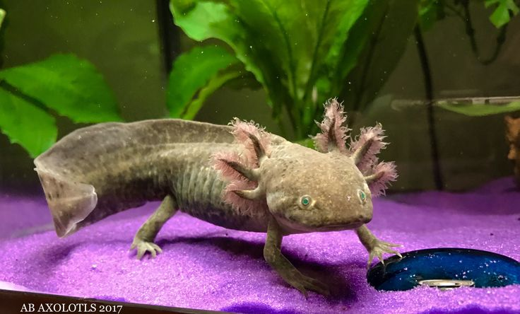
The Wild Type Axolotl
The second popular axolotl in captivity is the Wild Type Axolotl. They are known for their dark coloration.
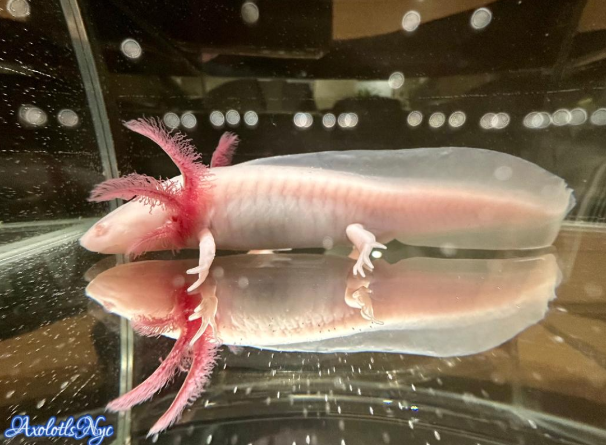
The Albino Axolotl
The third popular axolotl in captivity is the Albino Axolotl. They are known for their pale pink or white body and their red or pink eyes.